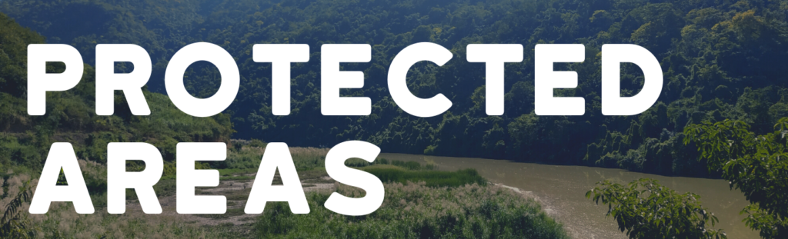
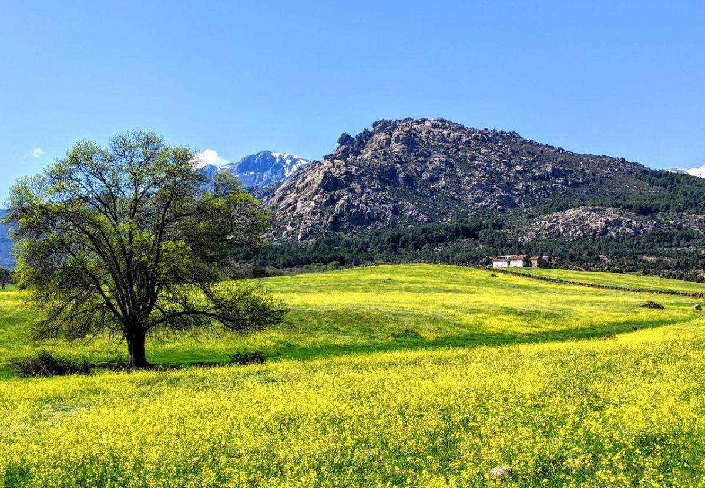

Protected Areas
Kajanan Sivasothilingam
Protected areas throughout the world perform many functions.
They are essential for conserving biodiversity, and for delivering
vital ecosystem services,
such as protecting watersheds and soils and shielding human communities from natural disasters.
Many protected areas are important to local communities. They are places for people to get a sense of peace in a busy world -
places that invigorate human spirits and challenge the senses. Protected landscapes embody important cultural values; some of
them reflect sustainable land use practices. They are important also for research and education, and contribute significantly
to local and regional economies, most obviously from tourism and recreation.

Copyright Kajanan Sivasothilingam - COMP 213-011 FALL 2022
Information:https://novascotia.ca/nse/protectedareas/definition.asp